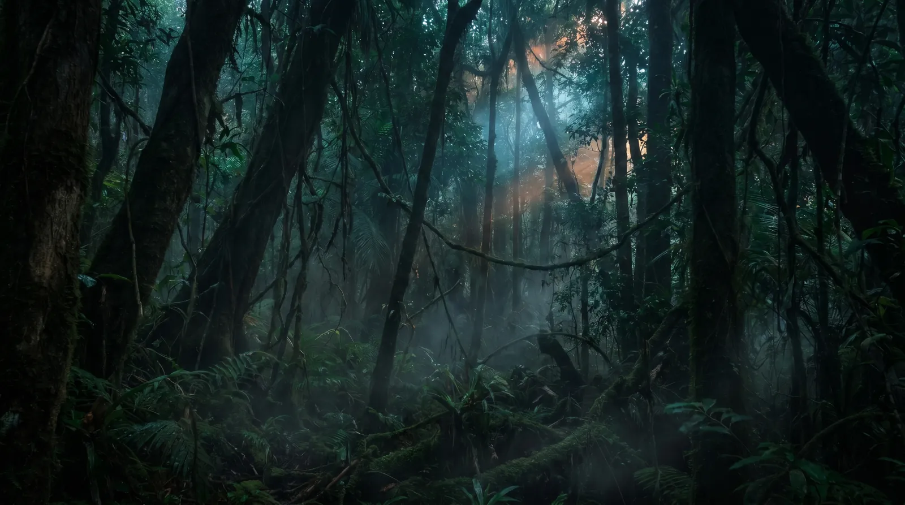
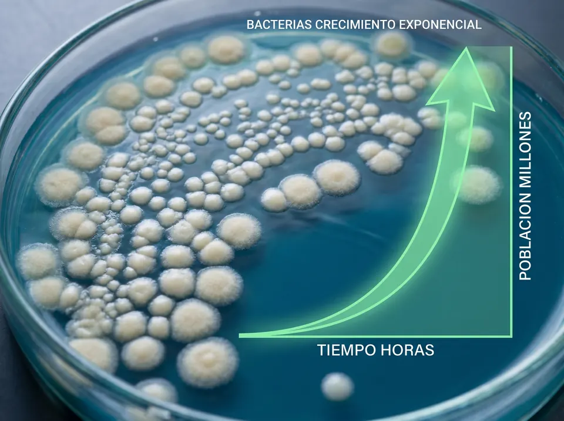
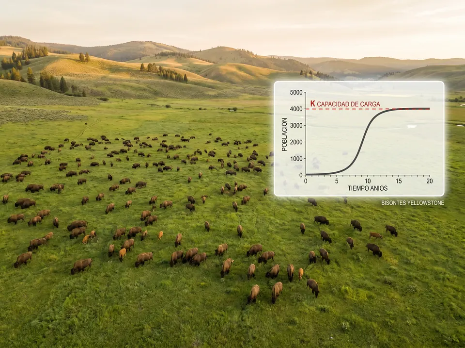
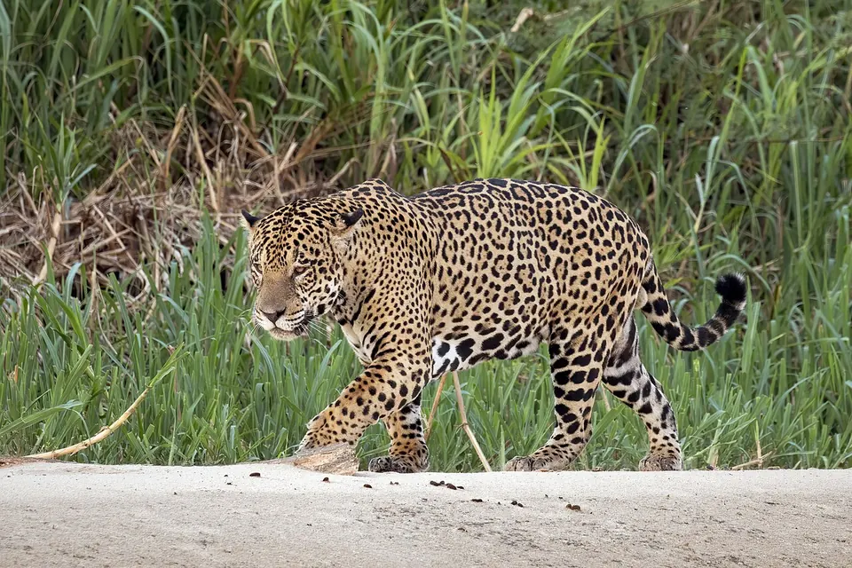

El estudio de las interacciones entre los seres vivos y su ambiente. Poblaciones, comunidades y ecosistemas.


Tema 1Dinámica poblacional, curvas de crecimiento (J y S), capacidad de carga.

Tema 2Bióticos y abióticos. Natalidad, mortalidad y migraciones. Resistencia ambiental.

Tema 3Competencia, depredación, mutualismo, comensalismo, parasitismo.